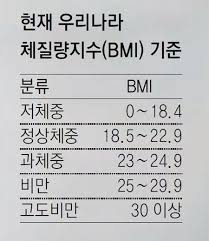
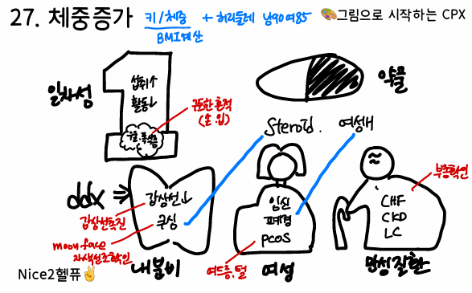

41. 체중증가/비만

+ 신체진찰 시 다시 계측
-> 전부 언급한 뒤 질문 받고 자세한 설명 추가하기

원인 | ||||||
에너지 섭취 증가 | 일차성 체중증가, 폭식증 | |||||
에너지 소모 감소 | 일차성 체중증가 (운동부족) | |||||
신경 내분비 이상 | 쿠싱증후군, 갑상샘저하증, 폐경후 증후군, 다낭난소증후군, 약물 유발 체중증가 | |||||
부종 | 울혈 심부전, 만성 신부전, 신증후군, 간경화 | |||||
평가목표 1) 병적 체중증가 구별 2) 내분비 질환에 의한 체중증가(비만) 감별 3) 진단 및 치료 계획 수립 | ||||||
구체적인 성과 | ||||||
병력 청취 | 체중증가 양상 확인 → 부종/비만 구별 | 속도: 수일 내 급격하게 증가 (부종) or 수개월 (비만) 부종 확인 + 소변량 변화: 심/신 부종 감별 | ||||
| 에너지 섭취/소모와 관련한 생활습관 변화 확인 | 에너지 섭취: 최근 식사량 변화, 야식/간식, 육류나 기름진 음식 에너지 소모: 운동량, 직업/환경변화 심리 : 폭식장애 감별 | ||||
| 내분비질환 유무 확인 | 쿠싱증후군: 얼굴,복부비만/자색선조/멍 (r/o 쿠싱증후군) 갑상샘기능저하증: 추위불내성/변비 다낭성 난소 증후군: 여드름/다모증 | ||||
| 체중 증가로 인한 합병증 확인 | 심혈관 질환: 운동 시 호흡곤란 수면무호흡증: 코골이/수면장애 관절: 무릎/허리통증 당뇨: 다음/다뇨/다갈 | ||||
신체 진찰 | 신체계측을 통해 비만상태 확인 | BMI 측정: BMI = kg/m² 허리둘레: 배꼽 높이에서 측정 (복부비만 : 남≥90cm, 여≥85cm) | ||||
| 부종에서 나타나는 신체이상 확인 | 하지 부종 (pitting edema) 확인 | ||||
| 내분비질환을 확인하는 진찰 | 쿠싱증후군: 얼굴 moon face, 목 뒤 buffalo hump, 복부 자줏빛 선조 갑상샘: 갑상샘 비대 | ||||
| 체중증가 합병증을 확인하는 진찰 | 호흡음, 심음 청진 인슐린 저항성: 목 뒤나 겨드랑이 흑색가시세포종 | ||||
진단 및 치료 | 1. 체중증가 원인을 감별할 수 있는 진단계획 수립 2. 체중증가 합병증에 대한 진단계획 수립 3. 원인에 따른 치료계획 수립 | |||||
| 기본검사 및 치료 | 혈액검사, 갑상샘기능검사, 흉부 X-ray, 심전도, 소변검사, 임신반응검사 | 식사요법, 운동요법을 통한 체중감량 약물치료, 동반질환 치료 | |||
| 원인 감별 | 일차성 / 약물유발 |
| statin / 약물 중단 | ||
|
| 내분비 | 갑상샘기능저하증 | 갑상샘기능검사 | 갑상샘호르몬제제 | |
|
|
| 쿠싱증후군 | 데사메타손 억제검사 24시간 소변유리 코티솔 | 스테로이드 중단, 부신절제술, TSA | |
|
|
| 폐경후증후군 | 호르몬검사 | 적절한 운동 | |
|
|
| 다낭성난소증후군 | 골반초음파, 호르몬검사 | 체중감량, 메트포민, 클로미펜 | |
|
| 심장 | 울혈 심부전 | 심전도, 심초음파 | ACEi, BB, spironolactone, 이뇨제 | |
|
| 신장 | 만성 신부전 | 전해질, BUN/Cr, 소변검사 | ACEi, ARB, 투석 (혈액/복막) | |
|
|
| 신증후군 | BUN/Cr, 소변검사, 신생검 | 스테로이드 | |
|
| 간 | 간경화 | 간기능검사, 복부초음파 | 인터페론, 항바이러스제, 고단백식이 | |
|
| 정신 | 주요우울증 | Beck 우울척도검사 | 항우울제(SSRI, TCA), 전기경련요법 | |
|
|
| 폭식증 |
| 항우울제, 인지행동치료 | |
| 합병증 | 당뇨 | 혈당검사 | 수면다원검사 | ||
|
| 수면무호흡증 | 수면다원검사 | 체중감량, 양압환기 | ||
환자 교육 | 체중관리를 위한 생활습관 교육 | 식습관 개선 : 규칙적인 식사, 간식/야식 줄이기, 저염분, 식이섬유 운동량 개선 : 일주일 5~6회 이상, 30분 이상, 땀이날 정도의 유산소, 걷고 계단 | ||||
| 비만치료의 필요성과 방법 설명 | 비만 합병증 : 고혈압, 당뇨, 심혈관계 위험성 → 체중관리 필요성 강조 | ||||
PPI 및 주의 사항 | ① 병력청취 시 올바르지 못한 생활습관이 나오더라도 중립적으로 들은 뒤 교육에서 생활습관 교정해주기 ② 체중관리 어려움에 공감 표하기 ③ 비만 합병증의 위험성 → 체중관리 필요성 강조 ④ 교육내용이 많으므로 (운동, 식이, 술, 담배) 시간 분배에 신경써서 교육시간 꼭 확보해두기! - 마무리 질문 후 추가 설명 등 시간 조절 ⑤ 약물복용력 – 구체적으로 약 물어보지 않으면 대답 안해주는 경우 있음 | |||||
|
|
|
| 150/55 160/65 170/70 180/80 190/90 |
|
|
질환 | 질환 설명 | 병력청취 | 신체진찰 | 검사 | 치료 | |
일차성 체중증가 3+1 대사증후군 1 | 활동량보다 음식 섭취가 더 많아 남는 E가 몸에 지방이 쌓임 | 건강하지 않은 식습관, 운동부족 | 복부비만 | 기본검사 :혈액검사,TFT,소변검사
| 식습관개선, 운동요법, 스타틴 | |
약물유발 체중증가 | 복용 중인 약물이 식욕 돋우거나 수분 붙잡음 | 여성호르몬, 스테로이드, 베타차단제 |
| 기본검사 :혈액검사,TFT,소변검사 | 약물 중단 후 재검 | |
내분비 | 쿠싱증후군 0+1 의인성 1 | 스테로이드 호르몬이 과해져 지방이 얼굴과 복부에 집중적으로 쌓임 | moon face, 여드름, 중심성 비만, 월경이상, 스테로이드 약물 | buffalo hump 복부 시진 – 자색선조, 복부비만 | 야간 덱사메타손 억제검사, 24시간 소변 유리 코티솔 | 스테로이드 중단, 부신절제술, 뇌수술 (TSA) |
| 갑상샘 저하증 2+1 | 몸 대사가 느려져 에너지 잘 태우지 못하고 쉽게 부음 | 추위불내성, 변비 | 갑상샘종대, 하지부종 | 갑상샘기능검사 | 갑상샘호르몬제제 (leveothyroxine) |
| 폐경후 증후군 | 여성호르몬 감소로 기초대사량이 떨어짐 | 안면홍조, 예민, 화끈 | 골반진찰 | 호르몬 검사 (FSH, estradiol) | 적절한 운동 |
| 다낭성 난소증후군 | 인슐린 저항성 생겨 혈당조절 잘 안되고 지방축적 | 다모증, 여드름 무월경~과다월경 | 골반진찰 | 골반초음파, 호르몬검사(FSH, LH) | 체중감량, 메트포민, 클로미펜 |
심장 | 울혈심부전 | 심장 힘이 약해져 혈액 잘 못 짜줘 수분이 혈관 밖으로 나와 몸 부음 | 기저 심질환, 호흡곤란, 부종, 피로 | 경정맥 확장, 다리부종 | 심전도, 심초음파 | ACEi, BB, spironolactone, 이뇨제 |
신장
| 만성신부전 | 콩팥이 물 제대로 못 걸러서 고임 | 고혈압, 당뇨병력, 피로, 가려움증 | 하지부종 | 전해질, BUN/Cr, 소변검사 | ACEi, ARB 투석 (혈액/복막) |
| 신증후군 0+1 | 콩팥에서 단백질이 빠져나가 혈액에 적어져서 부음 | 소변량감소,거품뇨,부종 |
| BUN/Cr, 소변검사, 신생검 | 스테로이드 |
간 | 간경화증 | 간이 딱딱해져 순환도 막히고 단백질 합성도 줄어져 부음 | 황달,복수,음주력,간염 | 복수 | 간기능검사, 복부초음파 | 인터페론, 항바이러스제, 고단백식이 |
정신
| 주요 우울장애 | 무기력해져 활동이 줄고 감정적 허기를 채우려 식사량이 늘음 | 우울,의욕저하,식욕부진,수면장애,죄책감,집중력저하, 사고력장애,초조 |
| Beck 우울척도검사 | 항우울제(SSRI, TCA) 전기경련요법 |
| 폭식증 | 단시간에 너무 많은 양의 음식을 먹는 습관 | 스트레스 시 식욕 증가 |
|
| 항우울제, 인지행동치료 |
O | 언제부터 체중이 늘기 시작했나요? | |
L | 몸의 특정 부위에 살이 많이 쪘나요? (눈 주위, 얼굴/팔다리 부종) 아니면 몸 전체에 살이 쪘나요? | |
D | 얼마 사이에 찌셨나요? | |
Co | 그 기간동안 몇 Kg에서 몇 kg로 늘어나셨나요? | |
Ex | 이전에도 이런 적 있으셨나요? | |
C | 현재 정확한 키/몸무게/허리둘레가 어떻게 되나요? (BMI 계산) (복부비만 : 남≥90cm, 여≥85cm) 최근 운동량/식사량 변화가 있었나요? -> 수면무호흡) 코골이/수면장애/낮피곤 | |
A | 전신) 발열/오한/피로 내분비) “갑쿠다당정신” 얼굴,복부비만/자색선조/멍 r/o 쿠싱증후군 추위불내성/변비 r/o 갑상샘기능저하증 여드름/다모증 r/o PCOS 안면홍조/예민 r/o 폐경
심장) 가슴통증/호흡곤란/부종 신장) 소변량감소/거품뇨 간) 식욕부진/오심구토/설사/변비/황달/복수 —심장/신장/간: 부종 확인차
정신) 우울/의욕저하 | |
F | 최근 스트레스? | |
E | 마지막 건강검진? | |
외 | 최근 다친 곳? 수술/입원? | |
과 | 현재 앓고 계신 질환이 있나요? 기본: 고혈압/당뇨/고지혈증/결핵 + 정신과 진료? | |
약 | 복용중인 약물? 스테로이드, 피임약, 정신과약 일일히 확인 최근에 한약? | |
사 | 기본: 음주/흡연/직업/스트레스 식습관 : 규칙적/식사량/외식/야식/육류나 기름진음식 + 어제 하루동안 먹은 식단 알려주세요(아침/점심/저녁/간식/야식) 운동 : 평소 운동은 규칙적으로 하세요? | |
가 | 고혈압/당뇨/고지혈증 비만 (가족 중에 체중이 많이 나가는 분이 있나요?) | |
여 | 월경력: 규칙적/생리량/월경통/LMP + 임신가능성! | |
PEx | 기본 | V/S 확인 (혈압, 맥박, 호흡수, 체온) 키/체중/허리둘레 측정 1 눈: 빈혈 2 입: 탈수 3 목: 갑상샘 촉진, buffalo hump r/o 쿠싱 4 사지: 손등 피부긴장도, 하지 오목부종 + 여성: 체모 5 흉부: 호흡음, 심음 |
| 누워서 | ⑥ 복부: 시(자색선조)-청-타-촉, 간비대, 복수 |
PPI | 병력청취 시 올바르지 못한 생활습관이 나오더라도 중립적으로 들은 뒤 교육에서 생활습관 교정해주기 | |||
진단 | 지금 가장 걱정되는게 있으신가요? 공감/안심) 불편하고 많이 걱정되셨을 것 추정진단) 지금까지의 문진과 신체 검진 소견을 종합해 보았을 때 ~~가 의심됩니다. 기전설명) 해당 질환은 ~~으로 이 때문에 체중이 증가된 것으로 보여집니다. 감별진단) 하지만 이 외에도 ~~등의 질환도 배제할 수 없어 추가적인 검사가 필요합니다. | |||
검사, 치료 | 기본 검사 | ① 혈액검사: 전혈구, 전해질, 간기능검사, BUN/Cr, 지질수치 ② 갑상샘기능검사 ③ 흉부 X-ray, 심전도 ④ 소변검사 : 야간 덱사메타손 억제 검사, 소변 유리 코티솔, 임신반응검사 | ||
| 기본치료 | ① 식사요법, 운동요법을 통한 체중감량 ② 약물치료 : BMI 30 이상 or 25 이상이면서 합병증 있을 경우 → 약물치료 ③ 동반질환 치료 : 고혈압, 당뇨, 이상지질혈증 | ||
| 일차성 체중증가 | 기본검사
| 식습관개선, 운동요법, 스타틴 | |
| 약물유발 체중증가 |
| 약물 중단 후 재검 | |
| 내분비 | 쿠싱증후군 | 야간 덱사메타손 억제검사, 24시간 소변 유리 코티솔 | 스테로이드 중단, 부신절제술, 뇌수술 (TSA) |
|
| 갑상샘기능저하증 | 갑상샘기능검사 | 갑상샘호르몬제제 (levothyroxine) |
|
| 폐경후증후군 | 호르몬 검사 (FSH, estradiol) | 적절한 운동 |
|
| 다낭성난소증후군 | 골반초음파, 호르몬검사(FSH, LH) | 체중감량, 메트포민, 클로미펜 |
| 심장 | 울혈 심부전 | 심전도, 심초음파 | ACEi, BB, spironolactone, 이뇨제 |
| 신장 | 만성 신부전 | 전해질, BUN/Cr, 소변검사 | ACEi, ARB, 투석 (혈액/복막) |
|
| 신증후군 | BUN/Cr, 소변검사, 신생검 | 스테로이드 |
| 간 | 간경화 | 간기능검사, 복부초음파 | 인터페론, 항바이러스제, 고단백식이 |
| 정신 | 주요우울증 | Beck 우울척도검사 | 항우울제(SSRI, TCA), 전기경련요법 |
|
| 폭식증 |
| 항우울제, 인지행동치료 |
| 합병증 | 당뇨 | 혈당검사, HbA1c | 생활습관 교정, 혈당강하제 |
|
| 수면무호흡증 | 수면다원검사 | 체중감량, 양압환기 |
교육 | 안심 진단/감별진단 치료/응급/합병증 교정/회피 검진/접종 Q?
약물치료) 필요 시 식욕억제제, 지방흡수억제제 등 사용 가능 갑상샘기능저하증/쿠싱증후군) 원인질환 치료를 통해 체중조절 가능 코골이) 체중을 감량하면 코골이 증상이 완화될 수 있음을 강조
비만 합병증) 단순히 외형적인 문제 뿐 아니라 고혈압, 당뇨, 심혈관계 위험성 → 체중관리 필요성 강조 식습관 개선) 가장 중요! 간식 줄이고 하루 3끼 제때 먹기 자기 전에 먹지 말기 식사 후에는 스트레스 받지 않는 적절한 휴식 저염분, 식이섬유 많이 섭취 운동량 개선) 일주일 5~6회 이상, 30분 이상 땀이 날 정도의 유산소운동 필요 많이 걷고 계단 이용하기, 걸어서 출근 | |||
PPI | ① 환자를 비난하거나 판단하지 않고 환자에게 격려 ② 체중감량의 어려움 공감하기 | |||